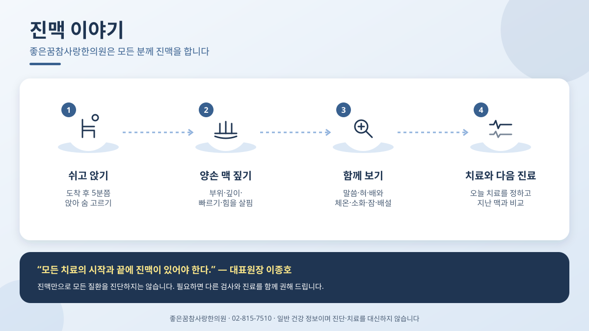

저희 한의원은 모든 분께 진맥을 합니다
처음 오신 분도, 다시 오신 분도, 허리가 아파서 오신 분도 좋은꿈참사랑한의원에서는 모두 맥을 짚는 일에서 진료를 시작합니다. 아픈 곳이 어디든, 그날의 몸 전체 상태를 먼저 함께 살피고 싶기 때문입니다.
모든 치료의 시작과 끝에 진맥이 있어야 한다.
— 좋은꿈참사랑한의원 대표원장 이종호(한의사 면허 19769)

왜 모든 분께 진맥을 하나요
몸은 따로따로 움직이지 않습니다. 잠을 설치면 통증을 더 크게 느끼고, 긴장이 풀리지 않으면 소화도 무거워집니다. 한의학에서 맥은 이런 몸 전체의 상태를 살피는 오래된 단서입니다. 그래서 맥만 따로 보지 않고 몸의 온기(체온), 소화, 잠, 대소변, 긴장의 정도를 여쭙는 말씀과 함께 읽습니다.
통증으로 오신 분께도 맥을 보는 까닭이 여기에 있습니다. 같은 허리 통증이라도 몸이 지쳐 있는지, 차가운지, 긴장이 높은지에 따라 오늘 함께 살필 점이 달라질 수 있습니다. 대표원장은 여러 해 전부터 예외 없이 모든 분의 맥을 짚어 왔고, 그렇게 쌓인 기록이 다음 진료의 기준이 됩니다.
손끝으로 무엇을 느끼나요
양쪽 손목 엄지 쪽, 맥이 뛰는 자리에 검지·중지·약지 세 손가락을 나란히 대고 살핍니다. 손끝의 넓은 면으로 가볍게 대는 것이 기본이며, 오래 세게 누르면 맥이 달라질 수 있어 손을 뗐다가 다시 짚기도 합니다.
- 부위: 세 손가락이 닿는 세 자리(한의학에서는 촌·관·척이라고 부릅니다)와 왼손·오른손의 차이
- 깊이: 살짝 댔을 때 잘 느껴지는지, 지그시 눌러야 느껴지는지
- 빠르기: 빠른지 느린지, 일정하게 뛰는지 중간에 쉬는지
- 힘: 힘 있게 밀어 올리는지, 힘없이 퍼지는지
- 모양: 가는 줄처럼 팽팽한지, 둥글게 구르듯 미끄러운지, 부드러운지
이 말들은 어려운 이름보다 쉬운 말로 설명해 드립니다. “오늘은 지난번보다 맥이 조금 가라앉아 있네요”처럼 지금 상태를 함께 확인하는 말로 전합니다.
진맥은 치료와 이렇게 이어집니다
- 오늘의 치료를 정할 때: 맥과 말씀, 혀와 배의 상태를 모아 침·약침·추나 등 그날 치료의 부위와 방법을 정하는 데 참고합니다.
- 한약을 상담할 때: 한약은 진맥을 포함한 진찰과 상담을 거친 뒤에 처방합니다. 보약을 찾으시는 경우에도 먼저 맥과 몸 상태를 살핍니다.
- 치료를 마칠 때: 필요하면 치료 뒤에 맥을 다시 짚어 몸이 어떻게 반응했는지 확인합니다.
- 다시 오셨을 때: 지난 진료 때의 맥과 오늘의 맥을 비교하고, 그사이 잠·소화·통증이 어떻게 달라졌는지 함께 여쭙습니다. 다시 오시나요?에서 재진 흐름을 볼 수 있습니다.
진맥 전에 이렇게 해 주세요
- 도착하시면 대기실에서 5분쯤 앉아 숨을 고른 뒤 맥을 봅니다. 서둘러 걸어오셨거나 계단을 오르셨다면 더 그렇습니다.
- 진료 직전의 커피 같은 카페인 음료, 격한 운동, 과식은 피해 주세요. 이미 드셨거나 운동을 하셨다면 그대로 말씀해 주시면 됩니다.
- 손목시계나 팔찌, 꽉 끼는 소매는 미리 풀어 두면 편합니다.
- 복용 중인 약(혈압약·심장약·갑상선약 등)이 있으면 이름을 알려 주세요. 약에 따라 맥이 달라질 수 있습니다.
진맥으로 할 수 없는 것
진맥은 몸 상태를 살피는 중요한 단서이지만, 진맥만으로 모든 질환을 진단하지는 않습니다. 심전도, 혈액 검사, 영상 검사를 대신하지도 않습니다. 말씀과 다른 진찰, 필요할 때는 초음파나 검사 결과를 함께 모아 판단하며, 다른 의료기관의 검사나 진료가 필요하다고 판단되면 그 내용을 먼저 권해 드립니다.
맥이 매우 불규칙하면서 가슴 통증, 숨참, 어지럼, 실신이 함께 있다면 한의원보다 119나 응급실이 먼저입니다. 복용 중인 약은 처방한 의사와 상의 없이 줄이거나 끊지 마세요.
진맥에 대해 더 읽어 보기
- 한의원에서 손목 맥을 짚는 진맥은 무엇인가요?
- 맥진은 어떻게 하고 손목에서 무엇을 살피나요?
- 통증 때문에 왔는데 진맥은 왜 하나요?
- 맥을 짚기 전에 운동이나 카페인은 어떻게 하면 되나요?
- 다시 올 때마다 맥을 또 짚는 이유는 무엇인가요?
- 맥이 빠르다, 약하다는 말은 무슨 뜻인가요?
- 진찰 방법 안내 전체 보기
자주 묻는 질문
정말 모든 환자에게 진맥을 하나요?
네. 좋은꿈참사랑한의원에서는 처음 오신 분, 다시 오신 분, 통증으로 오신 분, 교통사고 뒤 오신 분 모두 진맥을 합니다. 아픈 곳이 어디든 몸 전체의 상태를 함께 살피기 위해서입니다.
허리나 어깨가 아파서 왔는데도 맥을 보나요?
네. 같은 통증이라도 잠을 설치거나 소화가 무겁거나 몸이 많이 긴장된 상태라면 살필 점이 달라질 수 있습니다. 맥은 아픈 부위만이 아니라 그날의 몸 상태를 함께 보는 단서입니다.
진맥은 얼마나 걸리고 아프지는 않나요?
양쪽 손목에 손가락을 가볍게 대어 살피며, 길지 않습니다. 누르는 힘이 불편하면 바로 말씀해 주세요. 손목에 상처나 깁스가 있으면 미리 알려 주시면 됩니다.
진맥 전에 무엇을 피하면 좋나요?
도착하시면 5분쯤 앉아 숨을 고르신 뒤 맥을 보는 것이 좋습니다. 진료 직전의 커피 같은 카페인 음료, 격한 운동, 과식은 맥을 평소와 다르게 만들 수 있으니 피하시고, 그랬다면 그대로 말씀해 주세요.
맥만 짚어 보면 병을 알 수 있나요?
아니요. 진맥만으로 모든 질환을 진단하지는 않습니다. 말씀해 주신 이야기, 혀와 배의 상태, 필요할 때는 초음파나 검사 결과를 함께 모아 판단하며, 다른 의료기관의 검사가 필요하다고 판단되면 먼저 안내해 드립니다.
다시 올 때마다 맥을 또 보는 이유가 있나요?
지난 진료 때의 맥과 오늘의 맥을 비교하기 위해서입니다. 그사이 잠, 소화, 통증이 어떻게 달라졌는지 여쭙는 말씀과 함께 보고 오늘 치료를 다시 정합니다.
스마트워치로 재는 맥박과 진맥은 같은 건가요?
다릅니다. 스마트워치나 혈압계는 1분에 몇 번 뛰는지를 숫자로 알려 줍니다. 진맥은 빠르기와 함께 맥이 느껴지는 깊이, 힘, 모양, 양손의 차이를 손끝으로 살핍니다. 맥박 수가 계속 지나치게 빠르거나 느리면 내과 등 진료를 권합니다.
심장 질환이 있거나 혈압약을 먹고 있어도 진맥을 받아도 되나요?
네, 받으실 수 있습니다. 다만 복용 중인 약이 맥에 영향을 줄 수 있어 약 이름을 알려 주시면 함께 고려합니다. 복용 중인 약은 처방한 의사와 상의 없이 줄이거나 끊지 마세요.
감수: 좋은꿈참사랑한의원 대표원장 이종호(한의사 면허 19769) · 마지막 확인 2026-11-25 · 일반적인 건강 정보이며 진단·치료를 대신하지 않습니다. 문의 02-815-7510